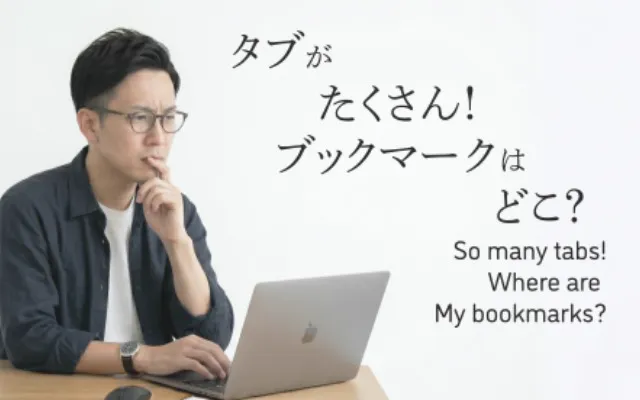

Die ene pagina,
waar was die ook alweer?
- Alles blijft openJe sluit niets, want je bent bang dat je het niet meer terugvindt.
- Eindeloos zoekenElke dag 5, 10 minuten in een zee van tabbladen.
- Alles wegAlles werd traag, je startte opnieuw op en de tabbladen waren weg.
Je handen zijn druk, maar het werk schiet niet op.
Daar maken we een eind aan.